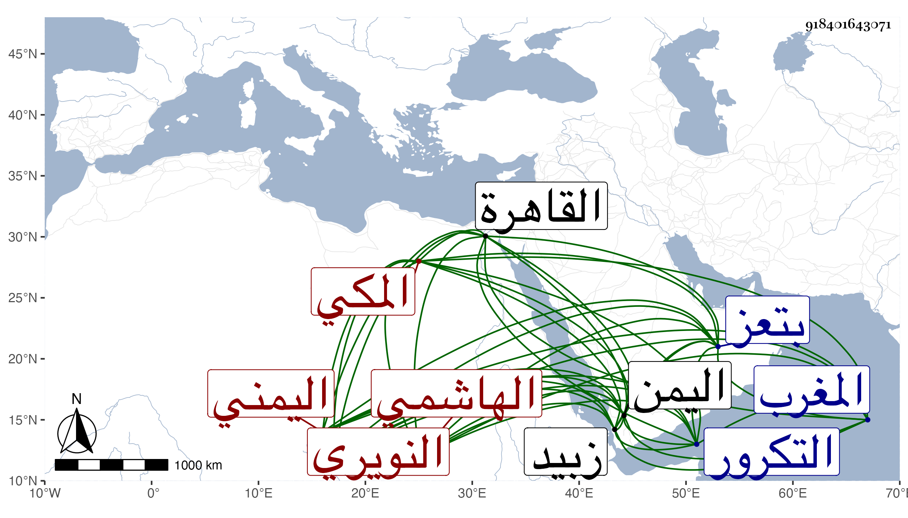

0902Sakhawi.DawLamic.ITO20230111-ara1.EIS1600.918401643071
Biography ID: 918401643071
96
محمد عبد العزيز بن علي بن أحمد بن عبد العزيز الهاشمي النويري اليمني المكي وأمه قمرا الهندية فتاة أبيه . ولد سنة ست عشرة وثمانمائة بتعز أو زبيد من اليمن ، وسافر مع أخويه عمر وعبد الرحمن إلى القاهرة في سنة اثنتين وثلاثين ثم إلى المغرب ثم التكرور ومات .
